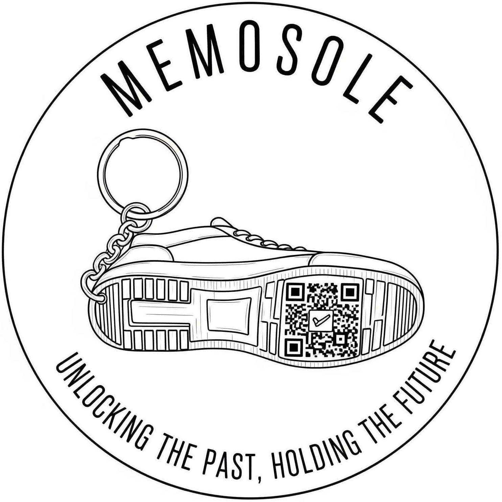
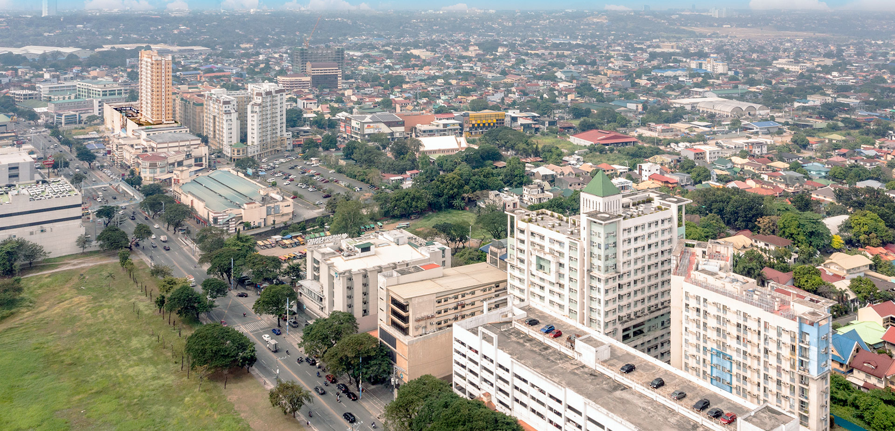

Riverside beginnings
Jesuits established a mission and chapel at what is now Jesus dela Peña.

MEMOSOLEUnlocking the Past, Holding the Future
MARIKINA CITY, PHILIPPINES
MemoSole connects Marikina’s proud shoemaking heritage with today’s digital world through a miniature shoe keychain with an embedded QR code. More than just a souvenir, it connects you to the history and identity of Marikina Polytechnic College and Marikina City.
Discover our historyA city shaped by its river. A legacy made by hand.
OUR ROOTS
Before it became a city of shoemakers, Marikina was a community rooted in the river and the land.
Early residents cultivated the fertile valley, growing rice and vegetables along its riverbanks. Over time, this agricultural community developed into a center of craftsmanship and industry.
Its story is one of skill passed from hand to hand, and a community continually finding new ways to move forward.
THROUGH THE YEARS
Jesuits established a mission and chapel at what is now Jesus dela Peña.
The settlement became a parish known as Mariquina.
Don Laureano “Kapitan Moy” Guevarra and fellow pioneers began the local shoemaking industry.
Marikina became a city through Republic Act No. 8223.
Historical reference: City Government of Marikina — Our City
THE ART OF SHOEMAKING
Kapitan Moy studied the construction of a worn pair of British shoes and made patterns from its components. With local collaborators, simple tools, and determination, a new industry began.
By the early 1900s, Marikina had become a town of shoemakers. That tradition gave the city the identity it carries today.
A LEGACY, CARRIED FORWARD
From a city shaped by shoemaking to a miniature shoe keychain with a digital story, MemoSole carries Marikina’s heritage into a new generation.
ABOUT US
Celebrating the city, its people, and its tradition of craft.
This website begins with the story of Marikina—its riverside roots, pioneering shoemakers, and lasting place in Philippine heritage.
Our business story will be shared here soon.
OUR PRODUCTS
Our collection is on its way.
Product details and availability will be added here when the collection is ready.
CONTACTS
Marikina City, Philippines
Our business contact details will be available here soon.